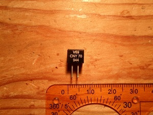
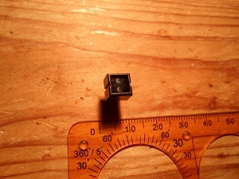
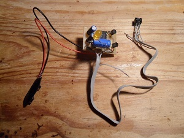
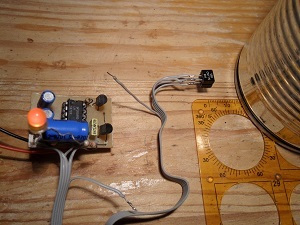
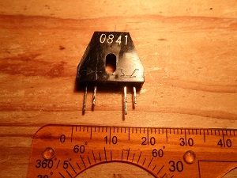
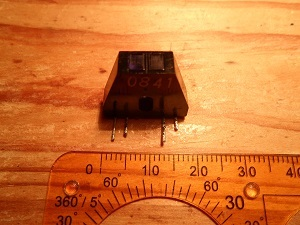
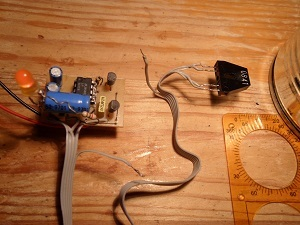
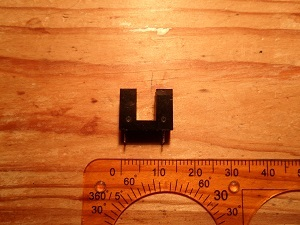
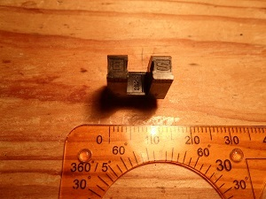
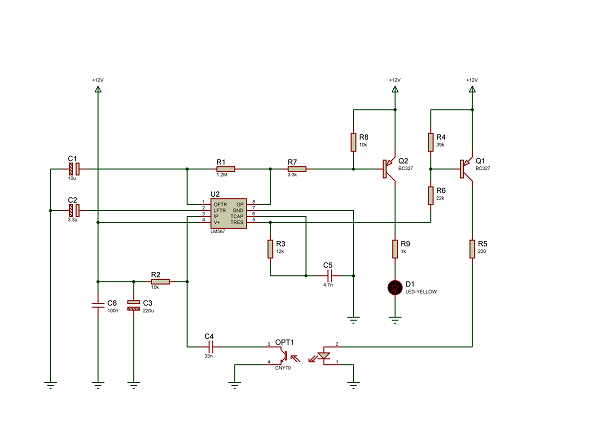

Tests de capteurs de proximité infrarouges.
Les capteurs testés ici permettent la détection d'objets de différentes natures, et de différentes couleurs, sans contact.
Ces capteurs, de type infrarouge, sont constitués d'un émetteur infrarouge, généralement une LED, et d'un récepteur infrarouge, le plus souvent un phototransistor.
L'émetteur et le récepteur peuvent être disposés côte-à-côte ou en vis-à-vis.

La face marquée du capteur « CNY70 », fabriqué par la socié VISHAY

La surface active du capteur CNY70, avec la LED infrarouge visible en bleue, en haut, et le phototransistor, de couleur sombre, en bas

Montage permettant de tester le capteur CNY70, en délivrant une information de type « Tout ou rien »

Mesure de la distance maximale de détection d'une boîte de conserve, dont la surface réfléchit les rayons infrarouges émis par la LED du capteur

Autre capteur infrarouge du même type, le modèle « HOA1405-001 », fabriqué par la société HONEYWELL

Vue de dessus, la LED infrarouge, de couleur claire, se trouve à gauche, et le phototransistor, de couleur plus sombre, se trouve à droite

Mesure de la distance maximale de détection d'une boîte de conserve avec cet autre capteur HOA1405-001

Capteur infrarouge de type « Fourche », ici le modèle « KTIR0611S », fabriqué par la société KINGBRIGHT. Ce type de capteurs est souvent utilisé pour compter les stries des roues codeuses, par exemple dans des imprimantes.

Vue de dessus du capteur KTIR0611S

Schéma électrique du montage permettant d'exploiter une information de type « Tout ou rien », à partir d'un capteur CNY70
Ce schéma électrique utilise un circuit
intégré qui porte la
référence « LM567 ».
Il s'agit d'un décodeur de tonalité disposant d'un oscillateur dont la fréquence est fixée par les valeurs des composants « R3 » et « C5 ».
Lorsqu'un signal de fréqunece proche de celle de cet oscillateur est appliqué sur la broche « IP », numéro 3, la sortie « OP », numéro 8, présente un « 0 » logique.
Bonsoir,
Les références des autres capteurs sont désormais indiquées dans l'article.
Les autres capteurs sont le HOA1405-001 d'HONEYWELL et le KTIR0611S de KINGBRIGHT.
Cordialement.
Clementc95
Le vendredi 5 octobre 2012 à 14:42
Bonjour,
Quelles sont les références des autres emeteur/recepteur infrarouge ?


{kind=link}
{kind=link}
{kind=link}
{kind=link}
{kind=link}
{kind=link}
{kind=link}
{kind=link}
{kind=link}
{kind=link}
Commentaires (2)
Atrylec
Le mercredi 10 octobre 2012 à 21:21
Bonsoir, Les références des autres capteurs sont désormais indiquées dans l'article. Les autres capteurs sont le HOA1405-001 d'HONEYWELL et le KTIR0611S de KINGBRIGHT. Cordialement.
Clementc95
Le vendredi 5 octobre 2012 à 14:42
Bonjour,
Quelles sont les références des autres emeteur/recepteur infrarouge ?
Merci d'avance
Ajouter un commentaire